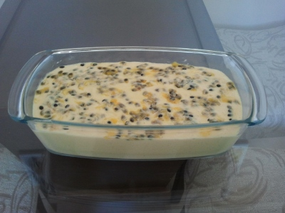

Mousse de Maracujá

Mousse de Maracujá
Ingredientes
- 1 Lata de leite condensado
- 1 Lata de creme de leite
- 1 Lata de suco de maracujá (aproximadamente 4 maracujás
- 1 Pacote de gelatina incolor
- Sementes de maracujá(para decoração)
Modo de Preparo
- Hidrate a gelatina na água, e depois dissolva em banho-maria
- Misture todos os Ingredientes em um liquidificador (exceto as sementes de maracujá)
- Bata os Ingredientes no liquidificador, em potência máxima, por 2 minutos
- Coloque o mousse na geladeira, deixando em refrigeração por aproximadamente 4 horas
- Devore
Informações Nutricionais
| Use com moderação |
| Valor Calórico(Kcal) |
225,37 |
9,01 |
| Carboidratos(g) |
40,56 |
10,82 |
| Proteinas(g) |
5,97 |
8,53 |
| Gorduras Totais(g) |
4,36 |
5,45 |
| Gorduras Saturadas(g) |
2,71 |
10,83 |
| Colesterol(mg) |
16,68 |
5,56 |
| Fibras Alimentares(g) |
0,30 |
0,99 |
| Cálcio(mg) |
142,21 |
17,78 |
| Ferro(mg) |
0,26 |
1,89 |
| Sódio(mg) |
91,68 |
3,82 |
Nutrientes |
Porções(60g) |
%VD |